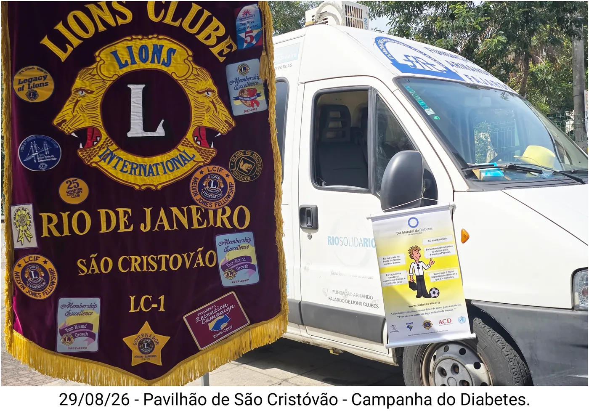

O clube
O Lions Clube Rio de Janeiro São Cristóvão, outorgado com sua Carta Constitutiva em 7 de outubro de 1963, erige-se como uma instituição de profundo valor histórico e inestimável relevância humanitária no Bairro Imperial da capital fluminense.
Integrante do Distrito LC-1, a agremiação fundamenta seu serviço comunitário na intersecção entre saúde pública, promoção da acessibilidade e garantia da dignidade humana.
Banco de cadeiras de rodas
Ao longo de sua longeva e profícua trajetória, a unidade desempenhou um papel ímpar na mitigação das vulnerabilidades físicas, notabilizando-se pela administração de um renomado banco de cadeiras de rodas que operou ininterruptamente entre 1991 e 2022, atendendo muitas centenas de deficientes físicos carentes. A nova gestão está empenhada em reformar a sede para ampliar sua prestação de serviço.
Este formidável aparato assistencial concedeu independência motora e suporte ortopédico imediato a inúmeros indivíduos desassistidos, cravando um marco de serviço desinteressado que inspirou outras agremiações do Rio de Janeiro a encamparem a captação e o provimento de equipamentos médico-hospitalares.
Prevenção do diabetes

Em paralelo ao seu legado na área da mobilidade, o São Cristóvão atua na prevenção do diabetes, da hipertensão arterial e da obesidade, realizando feiras públicas de saúde para a comunidade do bairro e adjacências, com exames gratuitos e essenciais: glicemia capilar, aferição de pressão arterial e medição do IMC, o índice de massa corpórea.
Este compromisso filantrópico permanece em franca expansão. Desde junho de 2026, em sinergia com a Fundação Armando Fajardo de Lions Clubes e unidades coirmãs, o clube realiza ações sociais nas dependências do Centro de Tradições Nordestinas, no Pavilhão de São Cristóvão.